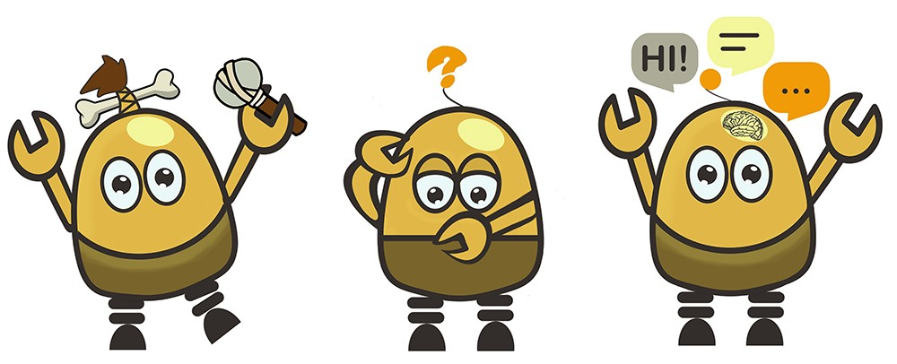
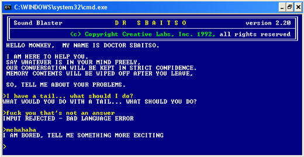
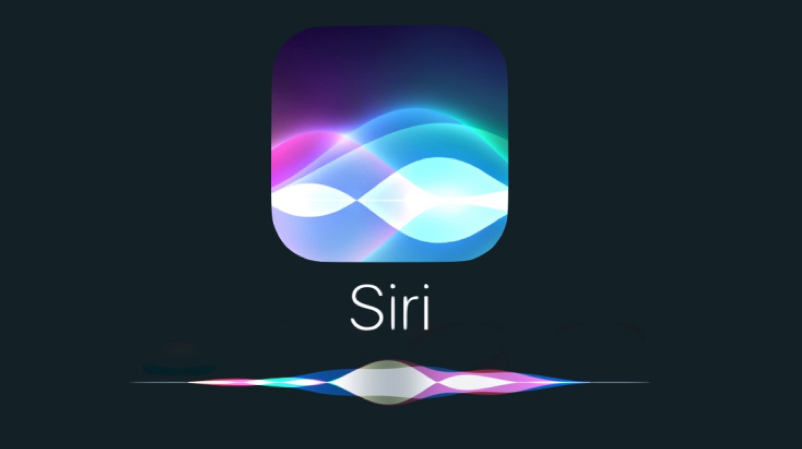
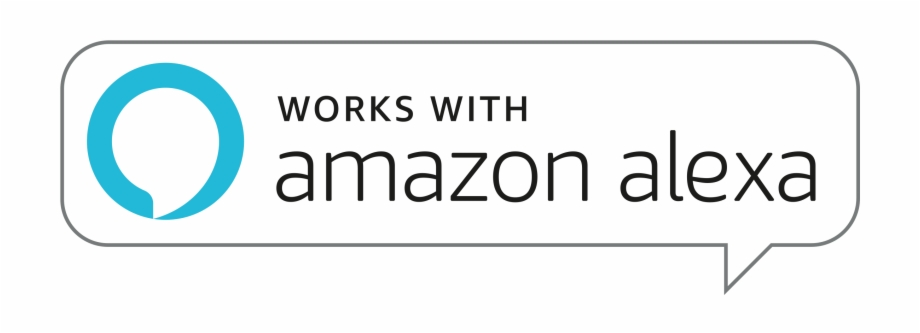
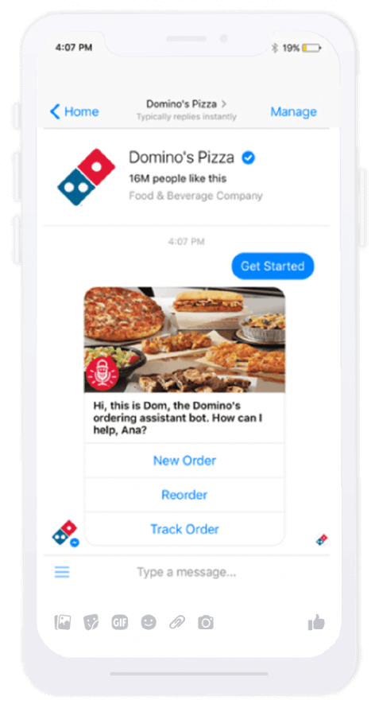
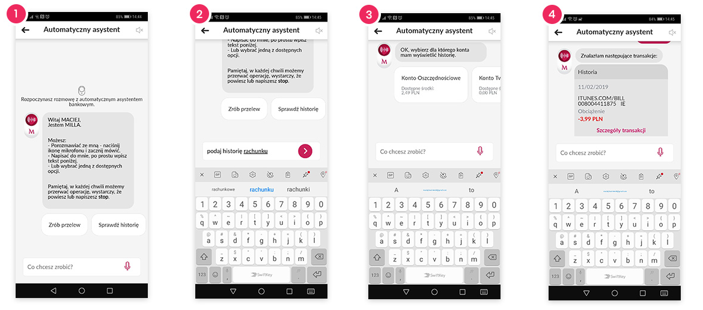
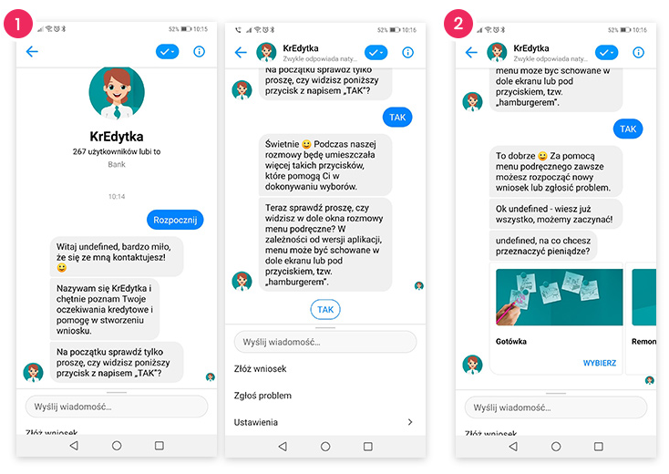
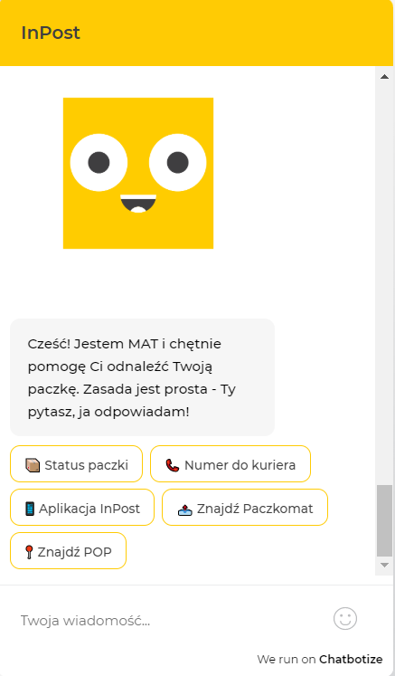
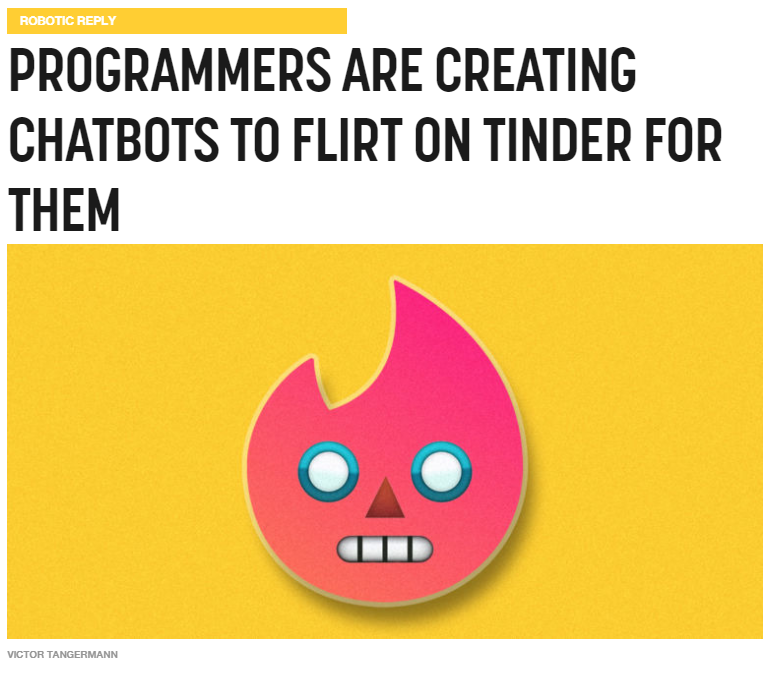
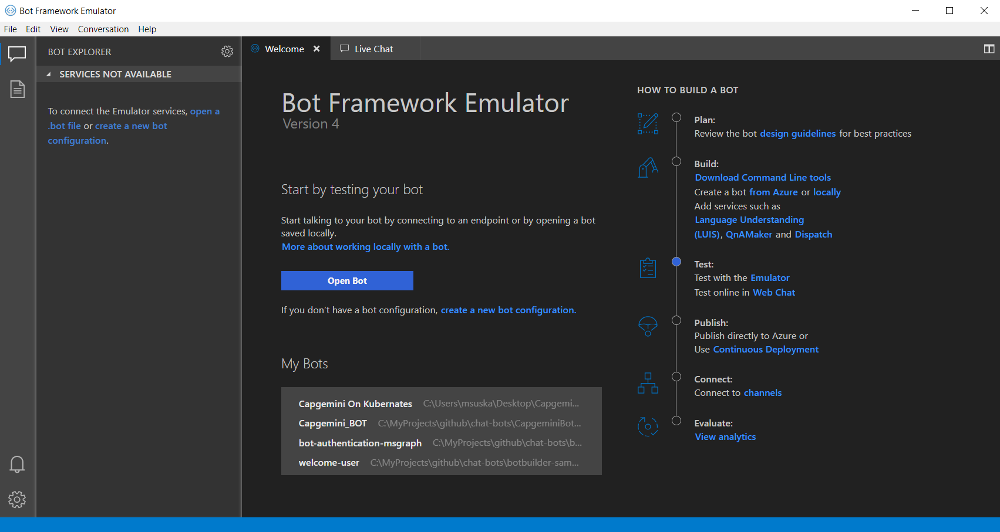

Questions?
History of chatbots
Eliza - 1966

https://www.eclecticenergies.com/ego/eliza
Dr. Sbaitso - 1992
Eugene Goostman - 2001

Apple Siri - 2011
Amazon Alexa - 2015
Facebook Messenger as a platform for bots - 2016
300 000 active bots on Messenger
Facebook F8 2018 Conference
Google Meena - 2020
Google says Meena can talk about pretty much anything
Meena is trained on public domain social media conversations
341 GB of text data
Model training takes 30 days (2048 TPU cores machine)
Not yet released - models have to be vetted for safety and bias - Lessons learned from Microsoft Tay Chatbot
Domino's Pizza ChatBot
Milla ChatBot
KrEdytka Chatbot
InPost MAT ChatBot
Tinder Bot
Chatbot market size - 2019
US $2.6 billion
Chatbot market size - 2024
US $9.4 billion
rasa
https://rasa.com/Google Dialogflow
https://dialogflow.com/IBM Watson
https://www.ibm.com/watson/how-to-build-a-chatbotAmazon LEX
https://aws.amazon.com/lexMicrosoft Bot Framework
https://dev.botframework.com/How to run bot?
Bot Framework Emulator
https://github.com/Microsoft/BotFramework-Emulator DEMO
Activity Handler Class
Documentation| Methods | |
| onDialog(BotHandler) | onReactionsAdded(BotHandler) |
| onMembersAdded(BotHandler) | onReactionsRemoved(BotHandler) |
| onMembersRemoved(BotHandler) | onTurn(BotHandler) |
| onMessage(BotHandler) | run(TurnContext) |
Demo time!
Dialog library
DocumentationWaterfall Dialog

FlyBot
Adaptive Cards limitations
Channel conversation post size - Approximately 28 KB per post on MS Teams
LUIS
https://luis.ai/FlyBot 2.0
Extras
QnA Maker
DocumentationSkills
DocumentationSkills
| Calendar Skill | IT Service Managment (ITSM) Skill* |
| Email Skill | Music Skill* |
| Point Of Interest Skill | News Skill* |
| To Do Skill | Phone Skill* |
| Automotive Skill* | Restaurant Booking Skill* |
| Bing Search Skill* | Weather Skill* |
Skills limitations
| Supported Languages |
| English |
| French |
| Italian |
| German |
| Spanish |
| Chinese (simplified) |
Bot Framework Composer
Documentation